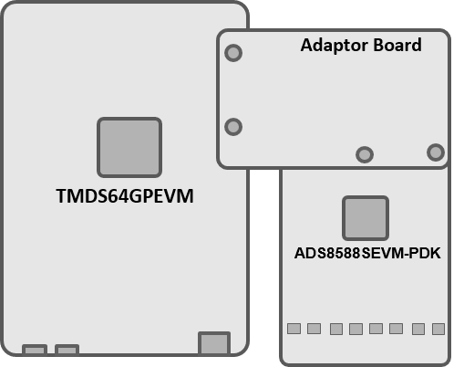
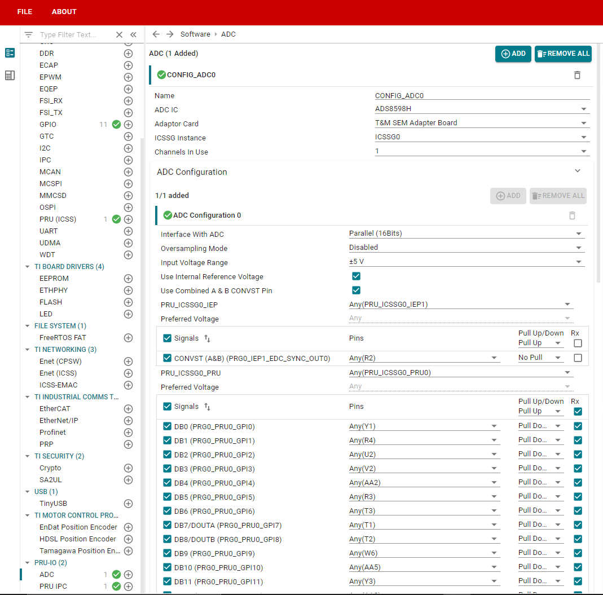
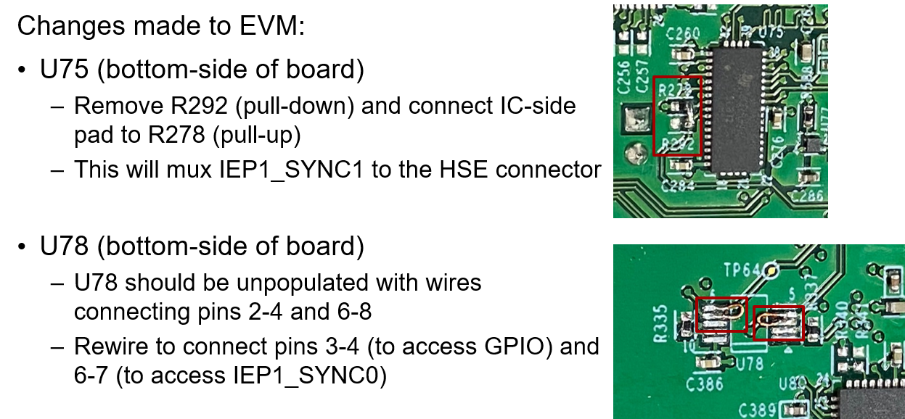
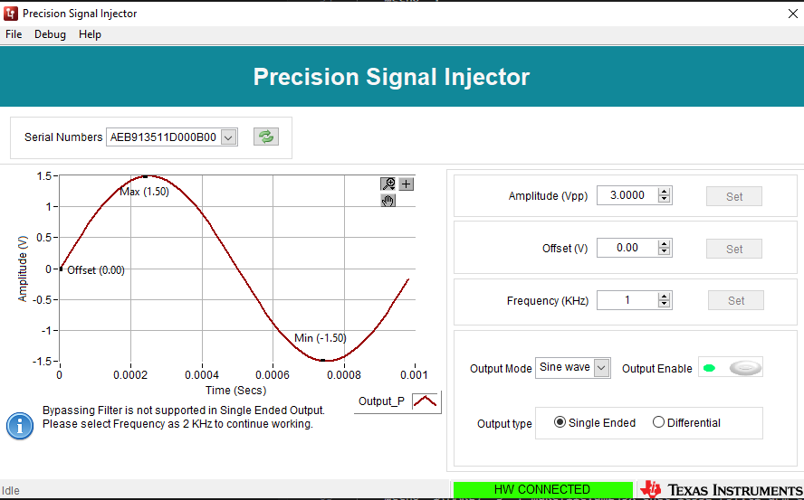
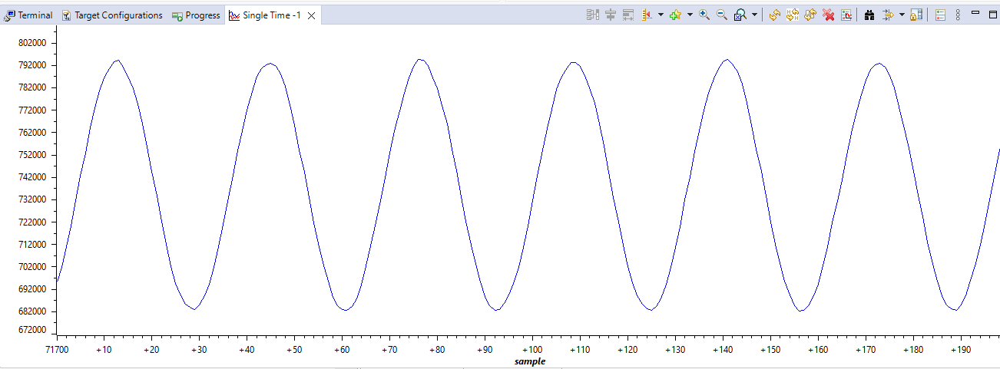

Introduction
This example uses ADC ICs from the below list to convert analog input signal on adc channels to samples and store the results in a shared memory which can be configured by the user (using PRU IPC module). The read samples are finally printed to the R5F console, or can also be visualized using CCS Graph plotter. GUI Composer app available on TI Gallery can also be used to evaluate the ADC using a GUI based interface.
The example does the below
- PRU controls the ADC and reads the samples
- PRU program implements ADC samples transfer interface
- PRU then writes the samples to a shared memory and creates an interrupt after writing 1 block of data
- On interrupt R5F then reads the data and prints it on console
Supported Combinations
| Parameter | Value |
| CPU + OS | r5fss0-0 freertos |
| ICSSG | ICSSG0 - PRU0 |
| Toolchain | ti-arm-clang, pru-cgt |
| Board | am64x-evm |
| Example folder | examples/pru_io/adc/ads85x8/ |
Steps to Run the Example
- Setup: The ADC EVM is connected to AM64x/AM243x GP EVM using an Adapter Board inbetween. When using "T&M SEM Adapter Board", refer to Important Usage Guidelines for additional details.

- When using CCS projects to build, import the CCS project from the above mentioned Example folder path for system_freertos_prufw (It will automatically import R5F and PRU project) for the required combination.
- On importing the project, SysConfig will contain an ADC Config instance with default configurations which are compatible with the ADC-PHI-PRU-EVM Adapter Board, Use R5F SysConfig to configure the required settings for the ADC IC.

ADC SysConfig Options
- You will need to edit linker file whenever changes are made to the configuration for PRU IPC module, refer Update linker command file
Features
Supported:
- Parallel 8 Bit Interface
- Parallel 16 Bit Interface
- Interrupt on receiving a block of data
- ADC, Pinmux and other configurations through SysConfig interface
Not Supported:
Important Usage Guidelines
To evaluate ADS8598H use the ADS8588SEVM-PDK but solder the ADS8598H part in place of ADS8588S. To connect the boards use T&M SEM Adapter Board, and connect it with ADC EVM and AM64x/AM243x GP EVM
- When interfacing with T&M SEM Adapter Board (deprecated), AM64x/AM243x GP EVM requires some hardware changes as mentioned:

AM64x/AM243x GP EVM Changes
- Make sure the J9 jumper on the adapter board is in "Parallel" mode for ADS85xx adcs for all modes of interface (serial, parallel or byte-parallel).
- From now on, T&M SEM Adapter Board won't be available for purchase, and Schematics and other details about this board can be found at: T&M SEM Adapter Board files
- ADC-PHI-PRU-EVM Adapter Board is supported from now on [orderable from May 2022]. Use of T&M SEM Adapter Board is deprecated.
Important files and directory structure
| Folder/Files | Description |
| ${SDK_INSTALL_PATH}/source/pru_io/ |
| firmware/ | PRU source files providing macros for interfaces, pru_ipc, etc. |
| driver/ | PRU IPC source files for sending ADC samples from PRU to R5F |
Sample Output
Shown below is a sample output when the application is built and run in debug mode:
--------------------------------------------------
Initializing ADC
--------------------------------------------------
Powering up ADC
--------------------------------------------------
Resetting ADC
--------------------------------------------------
Starting ADC Conversion
Started
----- Channel: 1 -----
Sample 1: 50308
Sample 2: 50304
Sample 3: 50304
Sample 4: 50304
----- Channel: 2 -----
Sample 1: 50308
Sample 2: 50304
Sample 3: 50304
Sample 4: 50304
Sample output with sinwave given as analog input to ADC

- CCS graph tool can be used to plot graph using digital data from ADC, PRU IPC start buffer address for each channel can found in linker command file of R5F project, sample output when sin wave is given as input is shown below

Implementation Details
Refer here for complete implementation explanation: ADS85x8 Implementation Details
 1.8.20
1.8.20